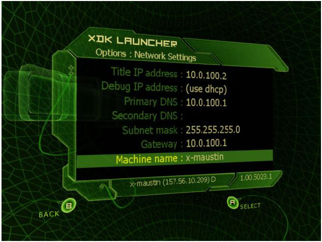
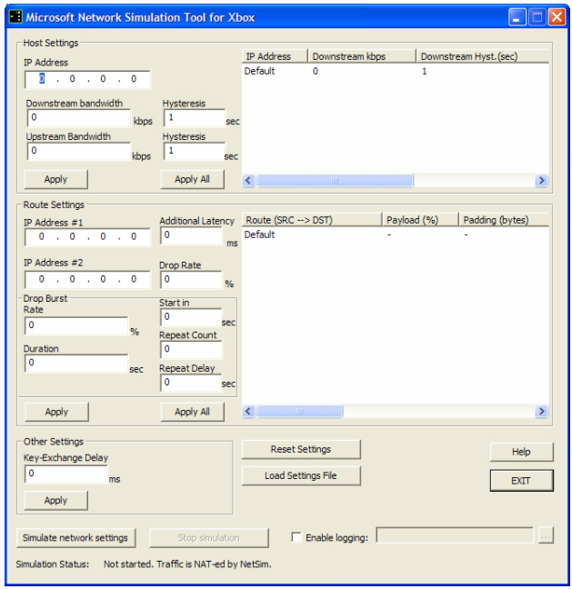

Game developers typically develop on a local area network (LAN) where network performance is well-behaved. The bandwidths are high, latencies are low, and packet loss isn't a factor. Network Conditions Simulator, or NetSim, helps developers by simulating real-world conditions to test game network performance and to prepare for online certification requirements (TCR 6-1-1 and TCR 6-1-2).
NetSim will:
NetSim will not:
The Xbox Development Kit installer does not automatically install the Xbox Network Conditions Simulator.
To install NetSimIf you need to reinstall NetSim, NetSimSetup.exe is located in the $(XDK)/xbox/bin directory.
NetSim will be installed by default to the C:\Program Files\Microsoft Network Simulation Tool for Xbox directory. Switch to this directory and use any text editor to open the file netsim.ini. NetSim will not run before you edit this file.
The default netsim.ini file looks like:
; NAT Settings [NetworkInterface.Xbox] IpBegin=10.0.x.1 ; Starting IP IpEnd=10.0.y.1 ; Ending IP
[NetworkInterface.Internet] Ip=157.56.12.20 ; Static IP address IpMask=255.255.254.0 ; Subnet mask of this interface IpGateway=157.56.12.1 ; Gateway of this interface DNSServer=157.54.5.109 ; DNS Server of this interface
The first section represents the range of virtual IP addresses NetSim will manage. NetSim will act as a NAT to manage network conditions for all Xbox Development Kits using addresses in this range as gateways.
There are two things to note when replacing x and y with a proper range. First, if more than one person on your LAN will be using NetSim at the same time, make sure your ranges do not overlap, or you will start intercepting each others' packets. Second, some firewalls will block the lower ports (1-1024 typically). NetSim maps client 'x' to the port range (x*256) to (x*256+255); if you have problems with smaller client IPs (10.0.1.*, 10.0.2.*) you may want to start with something higher, such as 10.0.100.*.
For this whitepaper, we'll assume you've decided to use the range 10.0.100.1 to 10.0.115.1.
The second section, beginning with [NetworkInterface.Xbox] represents the TCP/IP settings that NetSim will use to access the Internet. This section is optional and may be deleted if you are using DHCP. Note that if you specify it, the IP address should be different from the PC you are running NetSim on; if you use the same IP, NetSim will work but your machine will lose network connectivity.
As an example, if you are using DHCP and the virtual address range listed above, your entire netsim.ini file would be:
[NetworkInterface.Xbox]
IpBegin=10.0.100.1 ; Starting IP for client connections
IpEnd=10.0.115.1 ; Ending IP for client connections
Now you need to set up your Xbox Development Kits to route packets through the NetSim tool on your PC rather than through your default gateway. Adjust these numbers depending on the range of IPs you've selected for NetSim.
You can have fewer Xbox Development Kits than your range specifies without any problems. These settings can be changed from either the Xbox Live dashboard, or under Network Settings in the regular dashboard.
Here is an example of what your network settings should look like:

This does not change your debug IP address, so you won't notice much of a difference except when connecting to Xbox Live. If you were to run your titles now, they would not be able to connect to anything online, but system link would still work since it relies on the MAC address of the NIC in the Xbox.
If you go into the dashboard and type Y to access the online options and select the top-ping option, you should get the LOGON_CANNOT_ACCESS_SERVICE message.
You should see the following:

Now, if you ping the Xbox Live service from your Xbox, you should get a response. Before you click Simulate network settings to run a simulation, NetSim will forward all packets from and to your Xbox clients without applying any of the settings.
There are five types of network conditions you can simulate: Bandwidth restrictions, Latency, Drop Rate, Drop Burst, and Key-Exchange Delay.
Fields that you can set in NetSim for each section are represented by underscored italics.
To set host settings (in the top section), fill in the fields with an Xbox client IP and the values you would like to simulate. If you click Apply, it will apply the settings to the IP address you have given. If you click Apply All, it will apply the settings to all of the Xbox clients currently being NAT'd through NetSim. After applying your changes, you can change the fields to set up a new client without losing your old changes. The current properties of all Xbox clients that have had NAT'd traffic to them will be shown in the upper-right corner of the dialog box.
Route settings (in the middle section) are set similarly, except you need to fill in both Xbox client IPs that define the route. Routes are always symmetrical, so the latency between Xbox clients 10.0.100.2 and 10.0.101.2, for instance, will always be the same from 10.0.100.2 to 10.0.101.2 and from 10.0.101.2 to 10.0.100.2.
None of your settings will actually take effect until you run the simulation with the Simulate network settings button.
Bandwidth:
For example, assume Upstream Hysteresis was set to 2 seconds and Upstream kbps was set to 64 kbps. If the application sent 200 kilobits of data, 128 kilobits would be buffered to be sent gradually over the next 2 seconds. The remaining 72 kilobits would be lost as there wasn't room in the pipe for it.
If you click Apply All, the Bandwidth settings specified will override all current client-specific bandwidth settings.
Additional Latency:
Delay packets between IP Address #1 and IP Address #2 (both ways) by Additional Latency milliseconds.
Because routes are symmetrical, if you want to simulate round-trip latency of 200ms, you should set this value to 100.
Drop Rate:
Discard Drop Rate percent of the packets (randomly) sent between IP Address #1 and IP Address #2.
Drop Burst:
A drop burst is a period of Duration seconds where Rate % of packets between IP Address #1 and IP Address #2 are dropped. This overrides any Drop Rate settings between IP Address #1 and IP Address #2 for the given Duration seconds. The first burst will start after Start in seconds, and there will be a total of Repeat Count bursts, each separated by Repeat Delay seconds.
If you click Apply All, the Additional Latency, Drop Rate, and Drop Burst settings will be applied to all routes and override all current route settings.
Key-Exchange Delay:
When two Xbox clients initially connect to each other, there is a delay while they exchange security keys and attempt to secure a connection through the NATs that may be between them (cable modems, gateways, and so on). Setting the Key-Exchange Delay will cause a delay of Key-Exchange Delay milliseconds to the initial communication between two machines. In real world settings, this could be as long as 10 seconds (10000 milliseconds).
The two windows in the upper-right part of the application reflect the current settings. There are also a few additional fields under the route settings display window which will show the statistics for the overhead associated with packets sent between the two clients. Payload % is the ratio of just application data to total data sent including IP and Xbox headers. Padding is the average number of padding bytes used (smaller is better). Ports is the average number of bytes used to specify a port for traffic that doesn't go over port 1000.
For more information, see Pete Isensee's Xbox Live Networking Best Practices whitepaper on Xbox Central.
The Reset Settings button resets all settings to the default (transparent packet forwarding).
The Load Settings File button lets you load a configuration file instead of entering all the settings manually. For information on the format of this file, search the Xbox SDK for 'NetSim'.
>The Enable Logging checkmark lets you create a log file of all packets routed through NetSim. This can be a very useful debugging tool as packet details and timestamps will be logged into the file.
The Simulate Network Settings and Stop Simulation buttons switch from and to transparent mode (immediate packet forwarding, no loss). The text below these buttons describes the current state of NetSim.
You are now ready to start using NetSim. If you have any further questions, please check the NetSim Help file and/or e-mail your questions to xboxds@xbox.com.